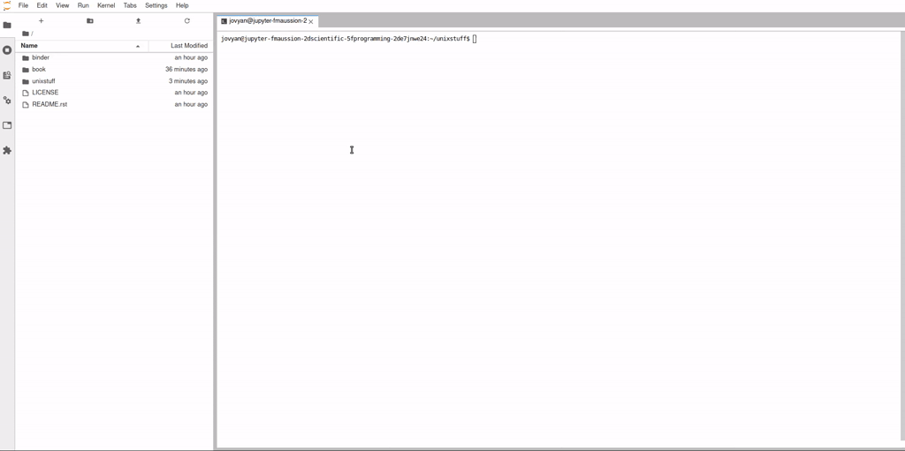

01 - A very short introduction to Linux¶
This lecture is about programming with Python, and we can do that on all major operating systems (Windows, Mac OS, Linux). Linux (and Mac) operating systems are sometimes preferred over Windows by scientists and programmers, for a number of reasons: therefore every student in (geo-)sciences should know about the existence of Linux and be familiar with the basics of it. Atmospheric Sciences students in particular will have to use it sooner or later, since most of the tools and data they are using are running or have been created on Linux systems.
Should I use it?¶
My very personal answer is a clear: yes! I can’t force you to it though, and all of the exercises of this lecture can be done on a Windows computer. If you are running Mac OS X then you have access to a linux terminal anyway and you can ignore my recommendation.
Linux has always been an environment for programmers and has the reputation of being “geeky” and “overly complicated”. This is much less true today, with many Linux distributions becoming mainstream and easy to use (my personal favorite is Linux Mint, but you probably mostly heard of Ubuntu, which I also recommend).
I believe that Linux is more user-friendly than Windows: once some of the particularities of Linux are understood (which can be frustrating in the beginning since it works very differently than windows), it appears that there is much less “hidden” in Linux than in Windows (especially when it comes to installing/deinstalling software, using the command line, or protecting yourself from viruses and intruders).
As a scientist and programmer there are many reasons to prefer Linux (or Mac OS X) to Windows. Let me list some reasons here:
Linux comes with many tools for scientists and programmers (“batteries included”). For historical reasons, Linux and its command line tools have been used by scientists and programmers since decades. It is not a surprise then that Linux comes with many (many) useful utilities to make programming and working with data easier.
Linux is fast and reliable. Linux is extremely stable and more lightweight than Windows. I’ve never seen a Linux machine becoming slower with time, as I was used to see in my time using Windows (I have to admit: it was more than 10 years ago).
Linux is the operating system of the huge majority of the super computers and web servers worldwide. Because of its efficiency, security, and multiple user management tools, Linux has taken over the web: 99.4% of the super computers and 67.5% of the web servers run Linux, while 79.3% of the mobile devices run Linux via Android.
Linux is at the heart of the open-source philosophy. Linux is free and open-source, and it is not surprising that people who embraced the open-source philosophy also prefer Linux to Windows or Mac.
There are also some reasons not to use Linux of course. For one, Linux can be confusing at first and you’ll need some time to get used to it. Also, it doesn’t come pre-installed on most computers and you’ll have to do it yourself (however, several retailers are already selling cheaper Ubuntu laptops to students). It is possible (but unlikely) that some of your hardware will not be compatible with Linux. Finally, some programs simply aren’t available on Linux: Microsoft Office, the Adobe Suite, and computer games are the most prominent examples. The free and open-source alternatives (LibreOffice and GIMP) are good, but not as good as their commercial counterpart. I used Linux exclusively for more than 10 years now, and I never regretted it. Recently I had to install Windows in a virtual machine in order to use the MS Office software provided by the University, and it works perfectly. Another option is to use wine.
Trying Linux¶
There are many ways to try Linux and make an idea by yourself:
At the University of Innsbruck: In order to use Linux in the computer room you have to register for an account here. After an hour or so you will be able to connect to any computer using your username and password. The Linux distribution used at the university is CentOS (not my favorite, unfortunately). If you are a student of another university, it is likely that you have access to Linux environments, too.
On an online, interactive MyBinder environment: my recommendation for this chapter and in times of global pandemic.
On your laptop with Windows 10, with Windows Subsystem for Linux: recommended if you want to stay on Windows while still enjoying the powerful Linux command line. UPDATE 2020: WSL2 seems to cause trouble to some of you (in particular, many of you cannot open graphic windows from WSL: until this problem is solved, WSL2 is not as useful as it could be).
On your laptop, with a live USB: this is the best way to try it at no risk and get a feeling for the general usage of a linux distribution. This is not permanent though.
On your laptop, in a virtual machine: This is a relatively easy and non-destructive way to try Linux. There are tons of tutorials online, this one seems OK. The problem with virtual machines is that they need a lot of resources (about double) to run both OS at the same time.
On your laptop, alongside Windows (dual boot): this is a bit more engaged, but the best way if you want to use both operating systems at full capacity. See here for the official instructions. Be careful however: it is possible that things get a bit complicated going this way: secure your data first, and be prepared for some unexpected events.
On your laptop, without Windows: Congratulations, this is the best solution! Please check that your hardware is compatible first, and follow the install instructions of your chosen OS. If you want to use Windows afterwards you can still re-install it or install it in a virtual machine.
Warning
Using Linux (or WSL) is a big step into something new: be prepared to be confused at first. Linux works very differently than Windows. Things that are simple on Windows now seem harder in Linux. I get it. You can compare learning Linux to learning a new language: it is frustrating at first, and you can’t do as many things as you did before. However, on the long run it is rewarding because you understand something new and feel more “in command” of your own computer. Maybe you’ll have the patience for it, maybe not.
Let’s be honest, we all can live very happily without speaking chinese or french: so I really don’t mind if you prefer not to learn Linux. If you decide to learn it I’ll try to help you (within my possibilities ;-). But be prepared to spend the time on it, read online and test things in order to understand how this new “language” works.
Today’s task: try the command line online¶
Copyright notice: this section was largely inspired from the first parts of Michael Stonebank’s UNIX tutorial
Open the terminal on MyBinder¶
Open a terminal window on MyBinder

Open the terminal window. A terminal line starts with a $ prompt, waiting for you to start entering commands. The command line has a very important role in linux (as compared to windows where nobody uses it), since many tasks can be done much more efficiently with simple commands.
Listing files and directories¶
ls (list)
When you first login, your current working directory is your home directory. Your home directory has the same name as your username, for example, c7071047, and it is where your personal files and subdirectories are saved.
To find out what is in your home directory, type:
$ ls
The ls command lists the contents of your current working directory.
ls does not, in fact, cause all the files in your home directory to be listed, but only those ones whose name does not begin with a dot (.) Files beginning with a dot (.) are known as hidden files and usually contain important program configuration information. They are hidden because you should not change them unless you know what you do.
To list all files in your home directory including those whose names begin with a dot, type:
$ ls -a
As you can see, ls -a lists files that are normally hidden.
ls is an example of a command which can take options: -a is an example of an option. The options change the behaviour of the command. There are online manual pages that tell you which options a particular command can take, and how each option modifies the behaviour of the command. ls -lh is another way to call ls with two options, l for “listing format” and h for “human readable”.
Note: linux file names and commands are case sensitive, i.e. Test.txt is different from test.txt, and both names could coexist in the same directory.
The directory structure¶
All the files are grouped together in the directory structure. The file-system is arranged in a hierarchical structure, like an inverted tree. The top of the hierarchy is traditionally called root (written as a slash / )

When loging in we are automatically located in our personal home directory, which is aptly named because:
we won’t need to leave
homeduring our exerciseswe are allowed to do whatever we want in our
home, while we are not allowed to write, delete or change things in the other directories.
To know where we are in the directory structure, there is a useful command:
$ pwd
which prints the path of the current working directory.
Making Directories¶
mkdir (make directory)
We will now make a subdirectory in your home directory to hold the files you will be creating and using in the course of this tutorial. To make a subdirectory called unixstuff in your current working directory type:
$ mkdir unixstuff
To see the directory you have just created, type:
$ ls
Changing to a different directory¶
cd (change directory)
The command cd directory means change the current working directory to “directory”. The current working directory may be thought of as the directory you are in, i.e. your current position in the file-system tree.
To change to the directory you have just made, type:
$ cd unixstuff
Type ls to see the contents (which should be empty)
Exercise 1
Make a directory called backup located in the unixstuff directory
The directories . and ..¶
Still in the unixstuff directory, type:
$ ls -a
As you can see, in the unixstuff directory (and in all other directories), there are two special directories called (.) and (..)
The current directory (.)
In linux, (.) means the current directory, so typing:
$ cd .
means “stay where you are” (the unixstuff directory).
This may not seem very useful at first, but using (.) as the name of the current directory will save a lot of typing, as we shall see.
The parent directory (..)
(..) means the parent of the current directory, so typing:
$ cd ..
will take you one directory up the hierarchy (back to your home directory). Try it now.
Note
Typing cd with no argument always returns you to your home directory. This is very useful if you are lost in the file system.
~ (your home directory)
Home directories can also be referred to by the tilde ~ character. It can be used to specify paths starting at your home directory. So typing:
$ ls ~/unixstuff
will list the contents of your unixstuff directory, no matter where you currently are in the file system.
Copying files¶
cp (copy)
cp file1 file2 is the command which makes a copy of file1 in the current working directory and calls it file2
Note
Directories can also be copied with the -r option added to cp.
What we are going to do now, is to take a file stored in an open access area of the file system, and use the cp command to copy it to your unixstuff directory.
First, cd to your unixstuff directory:
$ cd ~/unixstuff
Then type:
$ wget http://www.ee.surrey.ac.uk/Teaching/Unix/science.txt
Can you check in the terminal (or online) what wget does?
Exercise 2
Create a backup of your science.txt file by copying it to a file called science.bak
Using [TAB]¶
[TAB] is very useful in the Linux (and other) command line: it uses an automated completion algorithm to complete the commands you are typing. For example, try to type $ cd ~/uni and then TAB. This is also going to make suggestions in case of multiple choices, or for commands.
Moving files¶
mv (move)
mv file1 file2 moves (or renames) file1 to file2
To move a file from one place to another, use the mv command. This has the effect of moving rather than copying the file, so you end up with only one file rather than two.
It can also be used to rename a file, by moving the file to the same directory, but giving it a different name.
We are now going to move the file science.bak to your backup directory.
First, change directories to your unixstuff directory. Then type:
$ mv science.bak backup/
Type ls and ls backup to see if it has worked.
Removing files and directories¶
rm (remove), rmdir (remove directory)
To delete (remove) a file, use the rm command. As an example, we are going to create a copy of the science.txt file and then delete it.
Inside your unixstuff directory, type:
$ cp science.txt tempfile.txt
$ ls
$ rm tempfile.txt
$ ls
You can use the rmdir command to remove a directory (make sure it is empty first). Try to remove the backup directory. You will not be able to since linux will not let you remove a non-empty directory. To delete a non-empty directory with all its subdirectories you can use the option -r (r for recursive):
$ rm -r /path/to/some/directory
This command will then ask you confirmation for certain files judged important. If you are very sure of what you do, you can add a -f to the command (f for force):
$ rm -rf /path/to/some/directory/that/i/am/very/sure/to/delete
Warning
Directories deleted with rm are lost forever. They don’t go to the trash, they are directly deleted.
Displaying the contents of a file on the screen¶
clear (clear screen)
Before you start the next section, you may like to clear the terminal window of the previous commands so the output of the following commands can be clearly understood.
At the prompt, type:
$ clear
This will clear all text and leave you with the $ prompt at the top of the window.
less
The command less writes the contents of a file onto the screen a page at a time. Type:
$ less science.txt
Press the [space-bar] if you want to see another page, and type [q] if you want to quit reading. As you can see, less is used in preference to cat for long files.
head
The head command writes the first ten lines of a file to the screen.
First clear the screen then type:
$ head science.txt
Then type:
$ head -5 science.txt
What difference did the -5 do to the head command?
tail
The tail command writes the last ten lines of a file to the screen.
Clear the screen and type:
$ tail science.txt
Exercise 3
How can you view the last 15 lines of the file?
Searching the contents of a file¶
Simple searching using less
Using less, you can search through a text file for a keyword (pattern). For example, to search through science.txt for the word “science”, type:
$ less science.txt
then, still in less, type a forward slash [/] followed by the word to search:
/science
And tape [enter]. Type [n] to search for the next occurrence of the word.
grep
grep is one of many standard linux utilities. It searches files for specified words or patterns. First clear the screen, then type:
$ grep science science.txt
As you can see, grep has printed out each line containg the word science.
Or has it ????
Try typing:
$ grep Science science.txt
The grep command is case sensitive; it distinguishes between Science and science.
To ignore upper/lower case distinctions, use the -i option, i.e. type:
$ grep -i science science.txt
To search for a phrase or pattern, you must enclose it in single quotes (the apostrophe symbol). For example to search for spinning top, type:
$ grep -i 'spinning top' science.txt
Some of the other options of grep are:
-vdisplay those lines that do NOT match-nprecede each matching line with the line number-cprint only the total count of matched lines
Try some of them and see the different results. Don’t forget, you can use more than one option at a time. For example, the number of lines without the words science or Science is:
$ grep -ivc science science.txt
Take home points: the command line¶
The linux command line is very powerful. So powerful that linux systems (without graphical interface, i.e. only using the command line) are running the vast majority of the world’s servers and super computers.
We have shown some examples of how to navigate in the linux directory structure and use some simple commands. This is by far not sufficient to demonstrate its usefulness: the grep command for example is extremely powerful to help you find files that you thought you had lost, and wget a file to a current directory is often much faster than downloading it in firefox and copy it afterwards. For the time being, this short tutorial should help get you started.
To go further
I recommend to follow Ryan’s linux tutorials, they are excellent!
Executable scripts¶
Now that you are familiar with the command line, you must have noticed that linux commands have some similarities with the statements you used in your bachelor programming course: by typing them in, the computer does things for you and gives you information back (often printed on screen, but not always). When you want to automate a series of commands you just typed in (for example renaming and moving files), a natural thing would be to write a script to do so.
Scripts are the simplest type of program one can write, and this can be seen as your first programming experience in this course. We are going to write a bash script and execute it: why we want to do this in a python scientific programming course may be not clear right now, but it will make more sense later I promise.
A simple script¶
In your unixstuff directory, create a new file name myscript.sh. You can do this using the default (graphical) text editor in MyBinder.
Open a new text file on MyBinder
Just type one simple line in the file:
echo Hello World!
Go back to the command line again. You can execute your script with the following command:
$ bash myscript.sh
Bash is a so-called “interpreter”. It reads your file and understands how to execute the commands in it.
Make a file executable¶
List the files in your directory, but whith the option -l for more information. Here is how it looks like on MyBinder:
$ ls -l
total 12
-rw-r--r-- 1 jovyan root 18 Sep 28 10:56 myscript.sh
-rw-r--r-- 1 jovyan root 7767 Sep 1 2000 science.txt
The first list of characters indicate the file’s permissions. Now read the first section of Ryan’s tutorial about permissions. So what do we learn from the above? That the file’s owner (myself) is allowed to read and write the myscript.sh file, but not to execute it. Let’s change this:
$ chmod a+x myscript.sh
Now everybody (including me) is allowed to execute this file. It is a quite harmless script, so I’m not too worried. Now we can execute it:
$ ./myscript.sh
Nice! We could add much more commands to our script (possibly making it more useful), but this was enough to illustrate the point I wanted to make: files can be executable in Linux, and a whole new world opens to us.
Note
Most often, it is recommended to add a specific first line to your script, called a shebang. This line tells the computer which interpreter should be used to run the file. In our case it is the default interpreter (bash), but this may not always be the case. To be entirely explicit, we recommend to always add a shebang to your script. In this case, we should add #!/bin/bash to our script:
#!/bin/bash
# Maybe some comment line about the purpose of this script
echo Hello World!
Take home points: bash scripts¶
It is possible to write simple programs in linux called scripts. These scripts can be executed by the default interpreter, and be made executable by changing their file permissions.
To go further
If you want to know more about bash scripts, read Ryan’s tutorial about the subject!
The linux PATH¶
Locate linux programs¶
You may have asked yourself: how does the linux command line know about the commands we are using? Where do I find them? A nice program helping us to find out is which. Let’s use it:
$ which less
/usr/bin/less
Now we can use another command, whatis, to tell us what we just did:
$ whatis which
The which command tells us that the less program is located in /usr/bin. We can also ask which where to find which:
$ which which
/usr/bin/which
$ ls -l /usr/bin/which
lrwxrwxrwx 1 root root 10 Nov 19 14:42 /usr/bin/which -> /bin/which
As expected, which is an executable file. Some executables are binary files (i.e. not human readable), but in this case which is actually a script:
$ less /usr/bin/which
Exercise 4
Scroll through the script. Can you locate the shebang line? How does the code look like to you: easily understandable, or rather cryptic?
The PATH variable¶
The linux command line knows so-called environmental variables. The echo command can display their value:
$ echo $PATH
(the $ tells echo to display the value of the variable PATH rather than its name). The PATH variable contains a list of paths, separated by semicolons. It is an extremely important variable: it tells linux where to look for executables and programs. Each time you type a command, linux will look in the PATH and see if it finds it. This is an extremely flexible and powerful system, as we are going to see in the next chapter (Installing Python).
The PATH can be extended to contain any other directory you find useful to add. Let’s do it:
$ mkdir ~/myprograms
$ export PATH=$PATH:~/myprograms
export creates a new variable called PATH (in this case, it overwrites the existing PATH).
Exercise 5
Now move your executable script myscript.sh in the myprograms directory. Verify that you can now execute the myscript.sh program from any directory.
Note
We have extended the PATH variable in this session only. If you close and reopen the terminal the changes will be lost. There are ways to make these changes permanent, we will learn them in the next chapter.
Warning
If a program is listed in several path directories, linux takes the first instance. Directories can be prepended and appended, as we will see in the next chapter.
Take home points: the linux PATH¶
The PATH variable tells linux where to look for programs and scripts. This is a very simple and powerful way to customize linux with your own scripts and programs. We are going to use this feature to install Python in the next chapter.